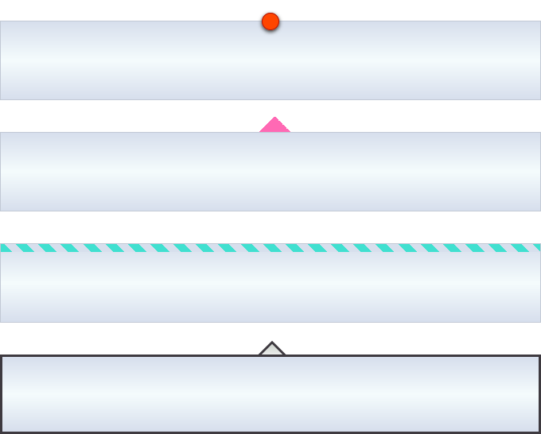

CSS content
Содержание:
Свойство content
В основе генерируемого содержимого лежат псевдоэлементы ::before или ::after. Псевдоэлементы создают абстракции о дереве документа помимо тех, которые определены языком документа, в данном случае — HTML. Например, HTML не предлагает механизмы доступа к первой букве или первой строке содержимого элемента. Псевдоэлементы CSS позволяют ссылаться на эту не имеющую доступа информацию. Псевдоэлементы также предоставляют дизайнерам стилей способ присвоить стиль содержимому, которого нет в исходном документе.
h1:before, h1:after {
content: "";
}
Генерируемое содержимое наследует значения свойств от элемента, к которому оно прикрепляется. При этом наследуются только наследуемые свойства.
| content | |
|---|---|
| Значения: | |
| normal | Значение по умолчанию, означает отсутствие добавляемого содержимого. |
| none | Не добавляет содержимое. Используется в случае, когда нужно удалить генерируемое содержимое для одного элемента из группы элементов (например, элементы списка), для которых уже задано это свойство. |
| counter() | Даёт возможность создавать счётчики, задавая для них точку отсчёта и приращение на некоторую величину с помощью свойства counter-reset. Для прямого увеличения счёта необходимо использовать свойство counter-increment. |
| attr() | Добавляет до или после элемента значение атрибута, заключённого в скобки. Чтобы вставить пробел между основным содержимым и генерируемым, нужно добавить пробел перед скобкой или после нее, например, content: attr( href); |
| " " | Текст, который добавляется на веб-страницу, должен быть заключен в двойные или одинарные кавычки. Пустые кавычки можно использовать для добавления блочного содержимого. |
| open-quote | Добавляет к содержимому открывающую кавычку. |
| close-quote | Добавляет к содержимому закрывающую кавычку. |
| no-open-quote | Удаляет открывающую кавычку, при этом уровень их вложенности продолжает учитываться. |
| no-close-quote | Удаляет закрывающую кавычку. |
| url() | Добавляет медиа-содержимое, например, изображение, звук, видео. В качестве значения атрибута в скобках указывается адрес внешнего ресурса, который вставляется в выбранное место документа. |
| initial | Устанавливает значение свойства в значение по умолчанию. |
| inherit | Наследует значение свойства от родительского элемента. |
Добавление специального символа
Можно оживить текст с помощью добавления специальных символов. В качестве значения используется символ Юникода.
h1 {
font-family: 'Niconne', cursive;
font-size: 50px;
color: #e12527;
}
h1:before, h1:after {
content: "\2746";
display: inline-block;
font-size: 60px;
color: #38afaa;
-webkit-animation: my 4s infinite alternate;
animation: my 4s infinite alternate;
}
h1:before {
margin-right: 0.5em;
}
h1:after {
margin-left: 0.5em;
}
@-webkit-keyframes my {
0% {color: #2e2f92;}
25% {color: #38afaa;}
50% {color: #5b59a7;}
75% {color: #f7b21c;}
100% {color: #e12527;}
}
@keyframes my {
0% {color: #2e2f92;}
25% {color: #38afaa;}
50% {color: #5b59a7;}
75% {color: #f7b21c;}
100% {color: #e12527;}
}
Добавление текста
В качестве генерируемого содержимого между кавычками можно поместить любой текст, и он появится в указанном месте, при этом текст в кавычках выводится как есть.
h1:before, h1:after {
content: "Yay!";
font-family: 'Dancing Script', cursive;
color: #f7b21c;
text-shadow: 1px 1px 2px grey;
}
h1:before {
margin-right: 30px;
}
h1:after {
margin-left: 30px;
}
Добавление изображения
h1:before {
content: url(https://html5book.ru/images/left-twig.png);
display: inline-block;
margin-right: 10px;
}
Добавление блочного содержимого

*{box-sizing:border-box;}
div {
position: relative;
width: 680px;
height: 100px;
border: 1px solid #C2C9D5;
margin-top: 40px;
background: linear-gradient(to top,#D7DFED, #F5FCFD, #D7DFED)
}
/*Кружок*/
div:nth-child(1):before {
content: "";
display: inline-block;
position: absolute;
left: calc(50% - 11px);
left: -webkit-calc(50% - 11px);
top: -11px;
width: 20px;
height: 20px;
border-radius: 50%;
border: 1px solid #AC170E;
background: orangered;
box-shadow: 0 2px 4px #292825;
}
/*Треугольник*/
div:nth-child(2):before {
content: "";
display: inline-block;
width: 0;
height: 0;
border-style: solid;
border-width: 0 20px 20px 20px;
border-color: transparent transparent hotpink transparent;
position: absolute;
left: calc(50% - 15px);
left: -webkit-calc(50% - 15px);
top: -21px;
}
/*Зебра*/
div:nth-child(3):before{
content: "";
display: inline-block;
position: absolute;
height: 10px;
width: 100%;
background: repeating-linear-gradient(45deg, turquoise, turquoise 10px, #D7DFED 10px, #D7DFED 20px);
}
/*Треугольник с обводкой*/
div:nth-child(4) {
border: 3px solid #3E3A40;
}
div:nth-child(4):before {
content: "";
display: inline-block;
width: 20px;
height: 20px;
border: 3px solid #3E3A40;
transform: rotate(135deg);
position: absolute;
left: calc(50% - 11px);
left: -webkit-calc(50% - 11px);
top: -15px;
background:linear-gradient(to top right,#CDD3CD, #EEF0EE, #CDD3CD);
z-index: -1;
}
Добавление значения атрибута
Функция attr() позволяет добавить любое значение атрибута, например, url-адрес ссылки, который будет выводиться при печати текста.
a:after {
content: attr(href);
}
Добавление кавычек
С помощью значений open-quote и close-quote можно генерировать открывающие и закрывающие кавычки. Внешний вид кавычек указывается в свойстве quotes. Если оно не задано, то будут использованы значения браузера по умолчанию.
<blоckquotе>Some text</blоckquotе>
blockquote {
quotes: "\2039" "\203A";
font-size: 40px;
font-family: 'Sigmar One', cursive;
}
blockquote:before {
content: open-quote;
color: mediumvioletred;
margin-right: 10px;
}
blockquote:after {
content: close-quote;
color: mediumvioletred;
margin-left: 10px;
}
Форматирование кавычек quotes
Свойство задаёт тип кавычек, используемых в документе для вложенных цитат. По умолчанию кавычками оформляется текст, заключенный в тег . Также кавычки можно сгенерировать помощью свойства content, задав ему значения open-quote и close-quote. В качестве значения используется специальный символ HTML или символ Юникода. Наследуется.
| quotes | |
|---|---|
| Значения: | |
| [символ символ]+ | Определяет вид открывающей и закрывающей кавычек. Первая пара используется для отображения внешнего уровня цитирования, вторая и последующие — для вложенных уровней цитирования. |
| none | Текст отображается без кавычек. |
| initial | Устанавливает значение свойства в значение по умолчанию. |
| inherit | Наследует значение свойства от родительского элемента. |
Синтаксис
p{quotes:'«' '»';}
p{quotes: none;}
| Описание | Внешний вид | Номер в Юникоде |
|---|---|---|
| Двойная кавычка | " | \0022 |
| Апостроф | ' | \0027 |
| Открывающая одинарная кавычка | ‘ | \2018 |
| Закрывающая двойная кавычка | ’ | \2019 |
| Закрывающая двойная кавычка | “ | \201C |
| Правая двойная кавычка | ” | \201D |
| Двойная нижняя кавычка | ⹂ | \2E42 |
| Открывающая левая кавычка «ёлочка» | « | \00AB |
| Закрывающая правая кавычка «ёлочка» | » | \00BB |
| Нижняя одинарная открывающая кавычка | ‚ | \201A |
| Верхняя одинарная обратная кавычка | ‛ | \201B |
| Нижняя двойная открывающая кавычка | „ | \201E |
| Двойная верхняя обратная кавычка | ‟ | \201F |
| Одинарная открывающая (левая) французская угловая кавычка | ‹ | \2039 |
| Одинарная закрывающая (правая) французская угловая кавычка | › | \203A |